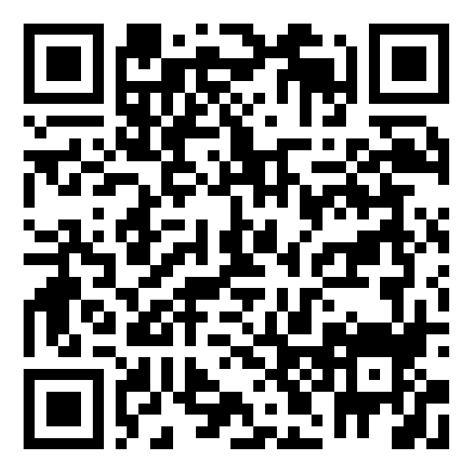

Leerkwartier
Een kwartier per dag — écht begrijpen wat je leert.
Gratis oefenen voor de Doorstroomtoets
Voor kinderen uit groep 6, 7 en 8. Oefenboeken kosten al snel €30 en bijles is duur — met Leerkwartier oefent uw kind élke dag gratis. Met uitleg als iets nog niet lukt.

Scan en begin vandaag nog
Richt de camera van uw telefoon op de QR-code. De app opent direct — niets installeren, geen account, geen betaalgegevens.
🎁 Cadeau bij deze folder
Uw code ENSCHEDE2027 wordt bij het scannen automatisch geactiveerd. Daarmee blijft Leerkwartier voor uw gezin óók heel 2027 gratis, tot en met de Doorstroomtoets. Geldig voor de eerste 50 gezinnen — wees er snel bij.
leerkwartier.app
Werkt op elke telefoon, tablet of computer
Wat krijgt uw kind?
- Een complete gratis oefen-Doorstroomtoets: rekenen, taal en studievaardigheden
- Elke dag een gratis vraag van de dag met uitleg
- Bij elke fout: uitleg op 3 niveaus — basis, simpeler, nóg simpeler
- Een leermaatje dat helpt als uw kind vastloopt, zonder het antwoord voor te zeggen
- Ook voor de bovenbouw: echte VMBO-examenvragen met uitleg
Ook zonder goed internet
- Printbare werkboeken met antwoordsleutel — vraag ernaar bij uw bibliotheek of print via leerkwartier.app/printen
- De Leesladder: begrijpend lezen dat klein begint en rustig opbouwt
Eerlijk en veilig
- 100% gratis in 2026 — geen proefperiode, geen abonnement
- Geen reclame en geen doorverkoop van gegevens
- Gemaakt door één vader uit Nederland, niet door een marketingmachine
Deze folder kreeg u via Voedselbank Enschede-Haaksbergen. Ieder kind verdient dezelfde kans op een goede toetsvoorbereiding — daarom is Leerkwartier gratis.
leerkwartier.app
Scannen lukt niet? Typ in de browser:
leerkwartier.app/?partner=ENSCHEDE2027
Vragen? Mail gerust: marksmulders1973@gmail.com · Mark Smulders, maker van Leerkwartier · leerkwartier.app